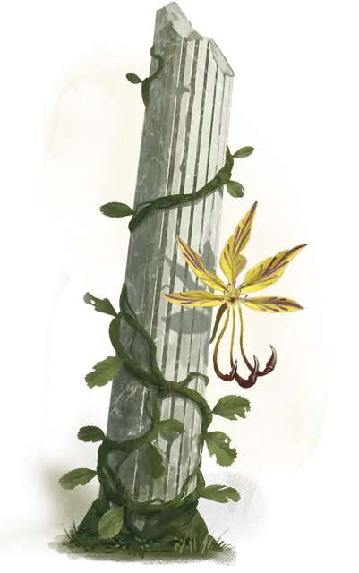

Жёлтая мускусная лиана
Yellow Musk Creeper
Среднее Растение, без мировоззрения

Класс Доспеха 6
Хиты 60 (11к8 + 11)
Скорость 5 футов, лазая 5 футов
| мод | спас | ||
|---|---|---|---|
| СИЛ | 12 | +1 | +1 |
| ЛОВ | 3 | −4 | −4 |
| ТЕЛ | 12 | +1 | +1 |
| мод | спас | ||
|---|---|---|---|
| ИНТ | 1 | −5 | −5 |
| МДР | 10 | +0 | +0 |
| ХАР | 3 | −4 | −4 |
Иммунитет к состояниям глухота, истощение, ослепление, сбивание с ног
Чувства слепое зрение 30 футов, пассивное Восприятие 10
Опасность 2 (450 опыта)
Бонус мастерства +2
Особенности
Обманчивая внешность. Пока лиана остаётся без движения, она неотличима от обычной лозы.
Регенерация. Лиана восстанавливает 10 хитов в начале своего хода. Если она получает урон огнём, некротической энергией или урон излучением, то эта черта не работает в начале следующего хода колючки. Лиана умирает только если начинает ход с 0 хитов и не может регенерировать.
Действия
Касание. . Рукопашная атака оружием: +3 к попаданию, досягаемость 5 фт., одно существо. Попадание: 13 (3к8) урона психической энергией. Если целью атаки является гуманоид и его хиты в результате этой атаки опускаются до 0, он умирает и в его тело помещается семя жёлтой мускусной лианы. Если семя не уничтожено, то по прошествии 24 часов труп оживает и превращается жёлтого мускусного зомби [yellow musk zombie]. Семя разрушается, если существо возвращают к жизни, прежде чем оно может превратиться в жёлтого мускусного зомби или если на труп становится целью заклинания снятие проклятья [remove curse] или подобной магии, прежде чем он оживёт.
Жёлтый мускус (3/день). Цветы лианы выпускают сильный мускус, который нацеливается на всех гуманоидов в пределах 30 футов от неё. Каждая цель должна преуспеть в спасброске Мудрости Сл 11 или станет очарована лианой на 1 минуту. Существо, очарованное таким образом, ничего не делает на своём ходу, кроме приближения, как можно ближе, к лиане. Существо, очарованное лианой, может повторять спасбросок в конце каждого своего хода, оканчивая эффект на себе при успехе.
Описание
Жёлтая мускусная лиана – это нечестивая лоза, цветы которой напоминают орхидеи. Яркие жёлтые с вкраплениями фиолетового цвета, эти цветы источают мускус, который привлекает добычу. Жёлтая мускусная лиана цепляется за стены, колонны, надгробные плиты, дверные рамы или скульптуры в теневых местах, оставаясь неподвижными до тех пор, пока не настанет время для атаки.
Гуманоидные носители. Жёлтая мускусная лиана уничтожает разум гуманоидов, затем имплантирует своё семя в тех, кого она убивает. Через двадцать четыре часа после имплантации семя прорастает в ползущую лиану, которая волшебным образом оживляет труп хозяина, превращая его в жёлтого мускусного зомби под контролем молодой лозы. В дополнение к защите беззащитного растения зомби действует как удобрение для молодой лозы, которая за семь дней вырастает до полного размера. После того, как она полностью вырастет, новая жёлтая мускусная лиана становится самостоятельной вылезает из своего зомби-носителя, после чего зомби разваливается на омертвевшие части. Если зомби уничтожается до появления лианы, то лиана засыхает и умирает.
Маленькие жёлтые мускусные зомби. Средний гуманоид, превращённый в жёлтого мускусного зомби, использует стат-блок, представленный в этом разделе. Маленький гуманоид, превращённый в жёлтого мускусного зомби, становится Маленькой нежитью с 27 (6к6 + 6) хитами, но в остальном имеет те же параметры.